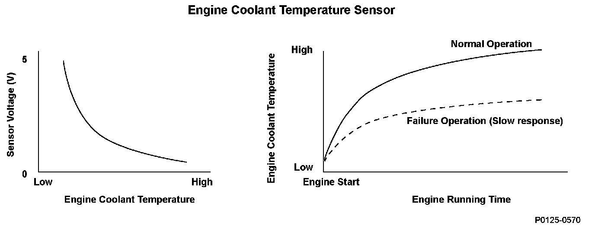
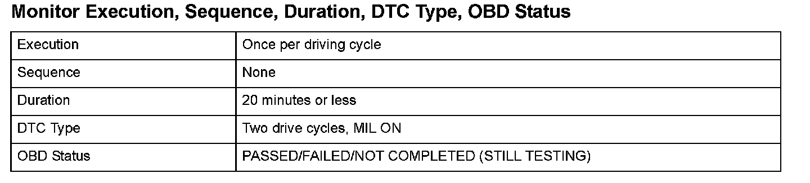
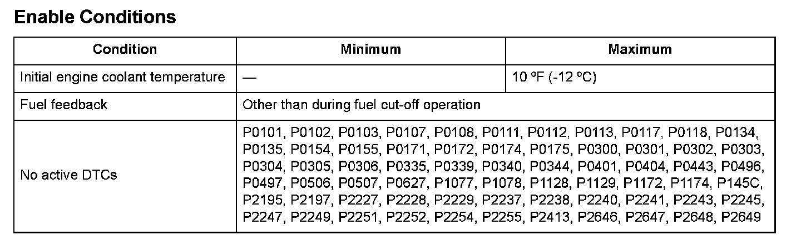
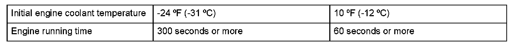

Advanced Diagnostics
DTC P0125: Engine Coolant Temperature (ECT) Sensor 1 Malfunction/Slow Response
General Description
The powertrain control module (PCM) supplies voltage to the engine coolant temperature (ECT) signal circuit (about 5 V) through a pull-up resistor. As the engine coolant cools, the ECT sensor 1 resistance increases, and the PCM detects a high signal voltage. As the engine coolant warms, the ECT sensor 1 resistance decreases, and the PCM detects a low signal voltage.
If the ECT sensor 1 output voltage does not reach a specified temperature at which closed-loop control for stoichiometric air/fuel ratio starts within a set time, depending on the initial coolant temperature after starting the engine, the PCM detects a malfunction and a DTC is stored.

Monitor Execution, Sequence, Duration, DTC Type, OBD Status

Enable Conditions

Malfunction Threshold
The engine running time before the engine coolant temperature reaches 10 °F (-12 °C), based on the initial engine coolant temperatures, is as follows.
Driving Pattern
1. Start the engine at an initial engine coolant temperature as specified under Enable Conditions.
2. Let the engine idle for at least 20 minutes.
Diagnosis Details
Conditions for illuminating the MIL
When a malfunction is detected during the first drive cycle with the ECT and IAT at engine start-up within the specified temperature range, a Temporary DTC is stored in the PCM memory. If the malfunction recurs during the next (second) drive cycle with the ECT and IAT at engine start-up within the specified temperature range, the MIL comes on and the DTC and the freeze frame data are stored.
Conditions for clearing the MIL
The MIL will be cleared if the malfunction does not recur during three consecutive trips in which the diagnostic runs.
The MIL, the DTC, the Temporary DTC, and the freeze frame data can be cleared by using the scan tool Clear command or by disconnecting the battery.